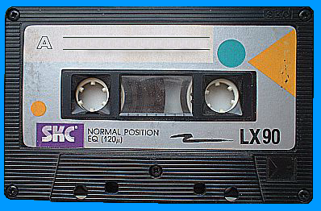

www.spetsialist-mx.ru
САЙТ О ПК "СПЕЦИАЛИСТ" И ЕГО КЛОНАХ
| |
|
| ГЛАВНАЯ | |
| МИКРОПРОЦЕССОР | |
| СИНХРОГЕНЕРАТОР | |
| ПАМЯТЬ | |
| ИНТЕРФЕЙС | |
| КЛОНЫ | |
| ПРОГРАММЫ | |
| ИГРЫ | |
| СПЕЦИАЛИСТ МХ | |
| ПЛИС | |
| ССЫЛКИ | |
| ОБРАТНАЯ СВЯЗЬ |
ПРОГРАММЫ
Для ПК "Специалист" написано большое количество программ. Для каждой программы в архиве (в формате архировщика - WinRar) представленно описание в формате Wicrosoft Word и сама программа в *.rom формате. Отдельно можно взглянуть на оригинал статьи в формате WinDJView. Эмулировать все программы можно при помощи эмуляторов представленных на странице "ПО и утилиты под PC".

Программа |
Размещение в памяти |
Архив |
Статья |
| Загрузчик-1 | C000H...C7FFH (DD52) |
root1.rar | "МК" №5, 1987 г. |
| Монитор-1 + Бейсик | C800H...CFFFH (DD53) |
monitor1.rar | "МК" №6, 1987 г. |
| Бейсик | D000H...D7FFH (DD54) |
basic1.rar | "МК" №7, 1987 г. |
| Бейсик | D800H...DFFFH (DD55) |
basic2.rar | "МК" №7, 1987 г. |
| Бейсик | D800H...DFFFH (DD55) |
basic3.rar | "МК" №7, 1987 г. |
| Программатор под Монитор - 1 | 8010H...812FH |
progr1.rar | "МК" №7, 1987 г. |
| Тест ОЗУ под Монитор - 1 | C000H...C0BFH (DD52) |
test1.rar | "МК" №7, 1987 г. |
| Расширитель Бейсика | 1A60H...208FH |
basic_ext.rar | "МК" №6, 1988 г. |
| Графический редактор | 2000H...253FH |
basic_gr.rar | "МК" №8, 1988 г. |
| Монитор - 2 | C800H...CFFFH (DD53) |
monitor2_2.rar | "МК" №9, 1988 г. |
| Редактор + Ассемблер | 0000H...11FFH |
edit_assm.rar | "МК" №10, 1988 г. |
| Загрузчик - 2 | C000H...C7FFH (DD52) |
monitor2_1.rar | "МК" №4, 1989 г. |
| Знакогенератор - 2 | D000H...D7FFH (DD54) |
monitor2_3.rar | "МК" №4, 1989 г. |
| Дополнительная программа | 8040H...808FH |
-//- | "МК" №4, 1989 г. |
| Дизассемблер | 0800H...0FFFH |
dissasm.rar | "МК" №6, 1989 г. |
| Дизассемблер с печатью | 80FFH...881FH |
dissasm_print.rom | "МК" №12, 1989 г. |
| Печать | 80F0H...82CFH |
print.rom | "МК" №12, 1989 г. |
| Программатор под Монитор - 2 | 8000H...836FH |
progr2.rar | "МК" №1, 1990 г. |
| Набор системных программ | C000H...C7FFH (DD52) |
monitor3_1.rom | "МК" №2, 1990 г. |
| Набор системных программ | C800H...CFFFH (DD53) |
monitor3_2.rom | "МК" №3, 1990 г. |
| Набор системных программ | D000H...D7FFH (DD54) |
monitor3_3.rom | "МК" №3, 1990 г. |
| "Цветной" загрузчик - 2 | C000H...C7FFH (DD52) |
col_monitor2.rar | "МК" №8, 1990 г. |
| Графический редактор + CIRCLE | 2000H...262FH |
basic_gr_circle.rar | "МК" №12, 1990 г. |
| Отладчик программ | 8010H...874FH |
debuger.rom | "МК" №10, 1994 г. |
| -//- | -//- |
-//- | "МК" №6, 1995 г. |
| Dump Corrector "DC Walker" | 0000H...03FFH |
DumpCor.rar | "МК" №4, 1996 г. |
| Монитор-2 + ROM - диск | C800H...CFFFH (DD53) |
m2_rom-disk.rar | "МК" №1, 1997 г. |
| Сборник системных программ | - |
soft_rks.rar | - |
| Загрузчик | C000H...C7FFH (DD52) |
winmon1.rar | "МК" №5, 1991 г. |
| "Оконный" монитор | C800H...CFFFH (DD53) |
winmon2.rar | "МК" №8, 1991 г. |
| "Оконный" монитор | D000H...D7FFH (DD54) |
winmon3.rar | "МК" №9, 1991 г. |
| "Оконный" монитор | D800H...DFFFH (DD55) |
winmon4.rar | "МК" №11, 1991 г. |
| Тест - программа | C000H...C7FFH (DD52) |
test_m.rar | "МК" №12, 1991 г. |
| Системные программы для ПК "Лик" | - |
soft_lik_rks.rar | - |
| Различные "Бейсики" для ПК "Лик" | - |
basic_lik_rks.rar | - |
| Другие программы для ПК "Лик" | - |
others_lik_rks.rar | - |
| Программы и игры от germanovitsh'а | - |
germanovitsh.rar | - |
| Несколько системных программ | - |
rks_systems.rar | - |
| Игры | - |
rks_games.rar | - |
| Архив кассет от HardWareMan'а. №1 | - |
01-MAGIC.rar | readme в архиве |
| Архив кассет от HardWareMan'а. №2 | - |
02-TDK-NIK.rar | readme в архиве |
| Архив кассет от HardWareMan'а. №3 | - |
03-CHERK-DNEPR.rar | readme в архиве |
| Архив кассет от HardWareMan'а. №4 | - |
04-TRANS-4-ALMA-ATA.rar | readme в архиве |
| Архив кассет от HardWareMan'а. №5 | - |
05-BASIC-LERN.rar | readme в архиве |
| Архив кассет от HardWareMan'а. №6 | - |
06-ZIMA_93_94.rar | readme в архиве |
| Архив кассет от HardWareMan'а. №7 | - |
07-RABOCHAYA-4.rar | readme в архиве |
МОНИТОР SP-580
Для запуска программ под Монитором SP-580 на ПК "Специалист" необходимо доработать схему. В архиве находятся схемы, конфигурационный файл для эмуллятора и прошивки под данный монитор.
{kind=link}
This site is © Copyright Fifan 2007-2021, All Rights Reserved.